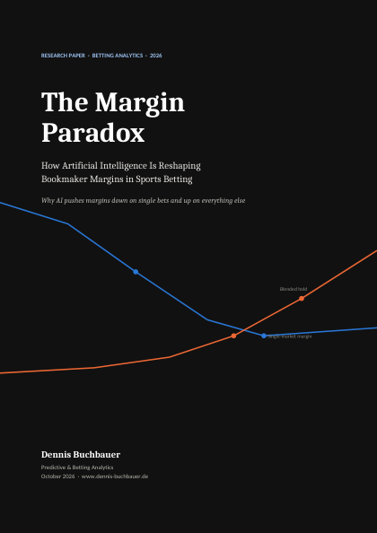

New research published · October 2026
Turning data into predictions that hold up.
Predictive & Betting Analytics Expert
Transforming data into actionable predictions. Specialized in sports betting analytics and real-world event forecasting, with a background in consumer behavior prediction.

Exclusive partner 
📍 Based in Germany 🇩🇪
Latest research
What AI is doing to betting margins

NEW · OCT 2026 · 19 PAGES
The Margin Paradox
How artificial intelligence is reshaping bookmaker margins in sports betting – and why it pushes margins down on single bets and up on everything else.
4.65%Premier League 1X2 margin, 2024/25
10.2%US sportsbook hold, 2025
73%of NJ revenue from parlays (Sept 2024)
2025
Predictive Analytics in Sports BettingStatistical models, machine learning and human behaviour patterns
Predictive Models38 pages↗
2025
Sports Analytics in German FootballCan success be predicted?
Sports Analytics26 pages↗
2025
Wettverhalten in DeutschlandBetting behaviour amid economic decline · German
Betting Analytics26 pages↗
2024
Konsumentenverhalten im LEHData analytics & predictive intelligence in German grocery retail · German
Consumer Behavior24 pages↗
Exclusive partner
Analysis for wette.de
Data-driven betting analysis in exclusive partnership with wette.de.
Contact
Media, research or partnership enquiries
Based in Germany. Reach out by email or on social.